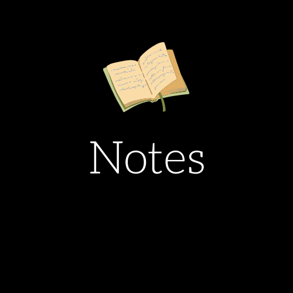
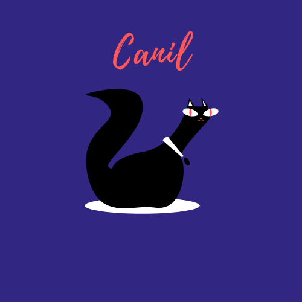
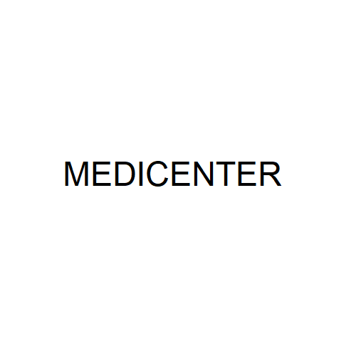
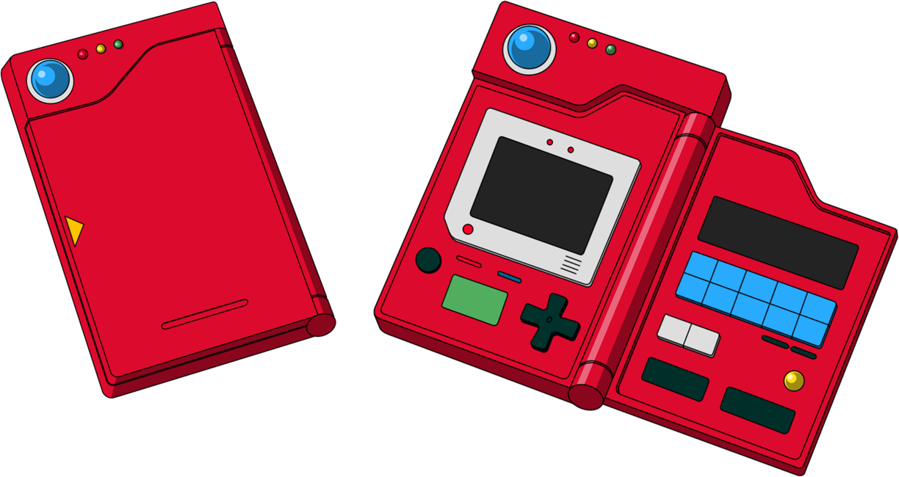

Notes é uma API contruída em Node.js, cujo o objetivo é possibilitar a criação de notas. O projeto foi desenvolvido em Node (Javascript) e a persistência de dados é feita através de um banco de dados relacional (Mysql), utilizando o Sequelize para fazer a comunicação entre o Node e o banco de dados. O projeto conta com o Jest para a realização de testes de integração e unitários. Como features disponíveis temos:
- Cadastro de Notas
- Edição de Notas
- Exclusão de Notas
- Atualização de Notas
Tecnologias utilizadas: Node.js Mysql, Sequelize, Git, Jest
Para visualizar o projeto no Github basta clicar na imagem do projeto

O clone da Netflix é projeto com fins didáticos montado somente em HTML, CSS e Javascript, cujo o objetivo foi basicamente replicar o front-end da Netflix
Tecnologias utilizadas: HTML, CSS e Javascript
Para visualizar o projeto no Github basta clicar na imagem do projeto

Canil é um projeto desenvolvido em Node.js utilizando a estrutura MVC, onde o seu front-end foi construído utilizando uma biblioteca chama Mustache.js e o seu backend desenvolvido em Node.js (Javascript).
Tecnologias utilizadas: Javascript, Node, HTML, CSS, Mustache
Para visualizar o projeto no Github basta clicar na imagem do projeto

O projeto foi desenvolvido com fins didáticos sendo um clone de um template chamado Medicenter, cujo os Créditos e Direitos do layout pertencem a QuanticaLabs. O mesmo foi desenvolvido utilizando apenas HTML. CSS e Javascript juntamente com Flexbox para posicionar os elementos na tela. O projeto também conta com um Layout responsivo funcionando tanto em telas Desktop quanto em dispositivos Mobile.
Tecnologias utilizadas: HTML, CSS e Javascript
Para visualizar o projeto no Github basta clicar na imagem do projeto

Esse projeto tem como intuito recriar uma pokedex utilizando uma api externa chamada PokeAPI. O projeto foi desenvolvido em React utlizando conceitos como flexbox e SASS e teve o seu layout previamente desenhado no Adobe XD
Tecnologias utilizadas: React, SASS, Vite, Typescript, Node
Para visualizar o projeto no Github basta clicar na imagem do projeto